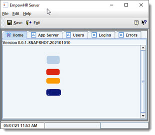

We have been running as "single" user, and now we will run a "server", and multiple "clients" - to show it working as a distributed application.
Run as Server - first, copy the files "ObjectCache.bin" and "data.bin" from "runtime/single/data" to "runtime/server/data".
To run from Eclipse, choose menu "Run/ Run Configurations ..." and click on "EmpowHR", change name to "EmpowHR single". Then click the duplicate button (upper
left toolbar) to create a duplicate, and name it "EmpowHR server". Go to the "Arguments" tab, and change single to server in both places.

Run this, and you will see the server UI.

Follow the same steps to create an Eclipse runtime for "client", and then run.


Login using "admin"/"admin" for user/password.